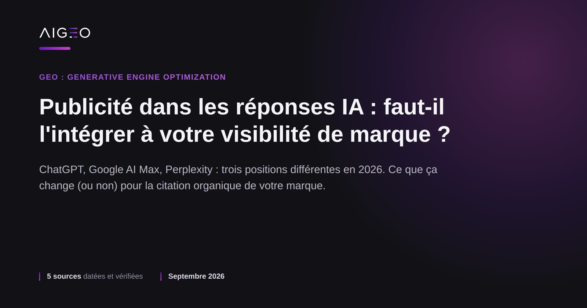
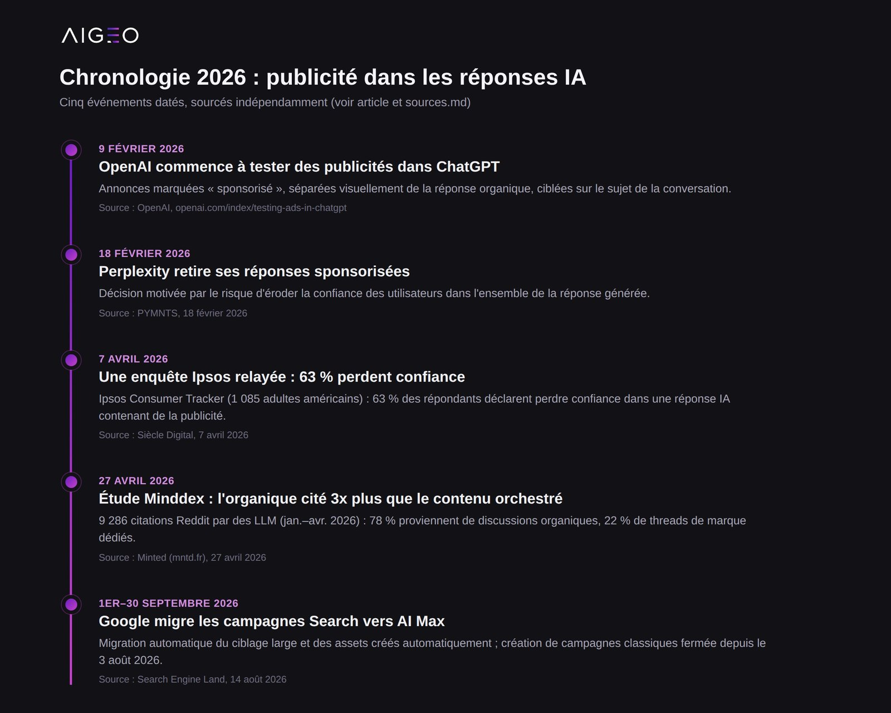
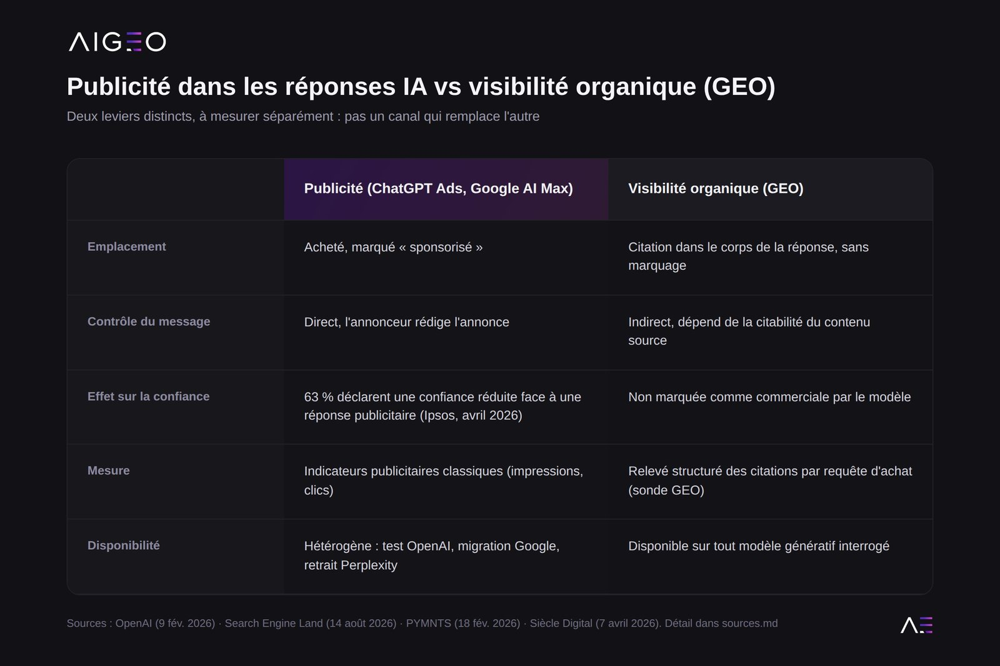

Depuis février 2026, ChatGPT teste des publicités directement dans ses réponses. Google migre en septembre 2026 ses campagnes Search vers un format piloté par IA. Perplexity, à l'inverse, a fait marche arrière sur les réponses sponsorisées. Pour un dirigeant marketing, la question n'est plus de savoir si la publicité entre dans les réponses IA, mais si elle change quoi que ce soit à la manière dont sa marque doit y être visible.

Qu'est-ce qui a changé dans les réponses des IA génératives en 2026 ?
Trois mouvements, portés par trois acteurs différents, ont redessiné le paysage en quelques mois.
- OpenAI teste des publicités dans ChatGPT depuis le 9 février 2026, avec une documentation mise à jour le 11 août 2026. Le format retenu place l'annonce à part de la réponse générée : elle est, selon OpenAI, toujours clairement marquée comme sponsorisée et visuellement séparée de la réponse organique. Le ciblage associe l'annonce au sujet de la conversation, aux discussions antérieures et aux interactions passées avec les annonces.
- Google a fermé la création de campagnes Search classiques le 3 août 2026 et migre automatiquement les campagnes existantes vers AI Max entre le 1er et le 30 septembre 2026, en commençant par le ciblage large et les assets créés automatiquement.
- Perplexity a pris le chemin inverse : l'entreprise a retiré ses réponses sponsorisées en février 2026, un responsable expliquant que la présence de publicité risquait de faire douter l'utilisateur de l'ensemble de la réponse, pas seulement de l'annonce elle-même.
Trois positions différentes sur la même question : la publicité doit-elle apparaître dans une réponse conçue pour donner une information de confiance ?

La publicité dans les réponses IA remplace-t-elle la visibilité organique ?
Non, et les deux canaux ne se recouvrent pas. La publicité achète un emplacement identifié comme tel. La visibilité organique, celle que mesure et travaille le GEO, consiste à être cité par le modèle comme source ou référence dans le corps de la réponse elle-même, sans marquage commercial.
Une étude de Minddex, relayée le 27 avril 2026, illustre l'écart entre les deux approches sur un terrain précis : 9 286 citations réelles de contenus Reddit par des LLM, analysées entre le 1er janvier et le 20 avril 2026. Résultat : les posts auto-publiés et les opérations de marque orchestrées sous-performent d'un facteur 3 face à la participation organique dans des discussions existantes. Sur l'échantillon étudié, 78 % des citations proviennent de fils de discussion organiques, contre 22 % de threads dédiés à une marque.
Ce chiffre porte sur Reddit spécifiquement, pas sur l'ensemble du web indexé par les modèles. Mais il confirme un principe que le GEO applique plus largement : un modèle génératif cite ce qu'il juge pertinent et bien formulé pour répondre à la question posée, pas ce qui a été le plus mis en avant commercialement.

La publicité dans les réponses IA a-t-elle un effet sur la confiance des acheteurs ?
C'est la question qui a fait reculer Perplexity. Une enquête Ipsos Consumer Tracker, menée auprès de 1 085 adultes américains et relayée par Siècle Digital le 7 avril 2026, indique que 63 % des répondants déclarent que leur confiance dans une réponse IA diminuerait si elle contenait de la publicité. L'échantillon est américain, pas français, et la méthodologie complète de l'enquête n'a pas pu être vérifiée dans le cadre de cet article : le chiffre doit donc être lu comme un indicateur de tendance, pas comme une mesure du marché français.
Ce chiffre éclaire un arbitrage que chaque plateforme d'IA générative doit faire : monétiser par la publicité, au risque d'éroder la confiance dans ses réponses, ou préserver cette confiance en misant sur les abonnements ou d'autres revenus. OpenAI et Google ont choisi d'avancer sur la publicité en la marquant explicitement. Perplexity a choisi de reculer. Pour une marque, cela signifie que le paysage publicitaire dans les IA génératives restera hétérogène d'une plateforme à l'autre, probablement pendant plusieurs trimestres.
Que doit faire une marque de produits « à conseil » face à ces deux dynamiques ?
Les marques vendant des produits qui nécessitent un conseil, literie, nutrition animale, cosmétique, équipement sportif, mobilier, matériel technique, sont particulièrement concernées : ce sont précisément les catégories où l'acheteur pose des questions comparatives à une IA avant d'acheter, plutôt que de taper un mot-clé de recherche classique.
Quelques repères pour arbitrer entre les deux leviers.
- La publicité dans les réponses IA est un canal d'achat d'espace, avec un contrôle direct sur le message et le moment d'apparition, mais un marquage commercial qui peut réduire la confiance de l'utilisateur, selon la tendance observée par Ipsos.
- La visibilité organique (GEO) est un travail de fond sur la structuration des contenus produit, les données techniques, les avis vérifiables et les réponses aux questions d'achat, sans garantie de citation, mais sans marquage commercial non plus.
- Les deux canaux ne s'excluent pas. Une marque peut tester des formats publicitaires sur ChatGPT ou Google AI Max tout en travaillant sa citabilité organique : ce sont deux budgets et deux méthodes de mesure distincts.
- Le calendrier de migration Google, du 1er au 30 septembre 2026, est un point de vigilance opérationnel immédiat pour toute marque qui gère des campagnes Search classiques. Les paramètres équivalents sont censés être repris automatiquement, mais un audit avant migration reste recommandé.
Aucune de ces sources ne permet d'affirmer qu'un canal remplacera l'autre à moyen terme. La prudence est de mesurer séparément ce qui vient de la publicité et ce qui vient de la citation organique, plutôt que de les confondre dans un même indicateur de « visibilité IA ».
Ce qu'il faut retenir
- OpenAI teste des publicités marquées « sponsorisé » dans ChatGPT depuis le 9 février 2026, documentation mise à jour le 11 août 2026.
- Google a fermé la création de campagnes Search classiques le 3 août 2026 et migre automatiquement vers AI Max entre le 1er et le 30 septembre 2026.
- Perplexity a retiré ses réponses sponsorisées en février 2026 par crainte d'éroder la confiance des utilisateurs dans ses réponses.
- Selon une enquête Ipsos Consumer Tracker relayée le 7 avril 2026 sur 1 085 adultes américains, 63 % des répondants déclarent perdre confiance dans une réponse IA si elle contient de la publicité. Échantillon américain, à lire comme une tendance.
- Selon une étude Minddex portant sur 9 286 citations Reddit par des LLM entre janvier et avril 2026, la participation organique génère trois fois plus de citations que les publications de marque orchestrées.
- L'idée que les deux leviers vont coexister plutôt que se substituer est une lecture d'analyste construite à partir de ces cinq sources, pas une donnée chiffrée.
FAQ
Non. Le GEO mesure les citations organiques, sans marquage commercial, dans le corps des réponses générées. Une publicité est un espace acheté et identifié comme tel, mesurée par des indicateurs publicitaires classiques, impressions et clics, pas par la citabilité du contenu de marque.
Rien dans les sources consultées ne justifie cet arbitrage. Les canaux publicitaires, Google AI Max et les tests ChatGPT Ads, et le travail de visibilité organique répondent à des logiques différentes et peuvent être menés en parallèle, avec des budgets et des mesures distincts.
Cela nécessite une mesure dédiée, distincte des outils publicitaires : un relevé structuré des réponses IA sur les requêtes d'achat de votre catégorie, avec la source exacte de chaque citation. C'est l'objet d'une sonde GEO.
Votre marque sort-elle sans budget publicitaire derrière ?
Nous posons deux questions d'acheteur de votre catégorie à une IA, en conversation neuve, sans jamais nommer votre marque, et nous vous montrons le résultat avec les captures datées.
- OpenAI, « Testing ads in ChatGPT », 9 février 2026, mise à jour du 11 août 2026. Lien
- Search Engine Land, « Google sets AI Max migration timeline for Search campaigns », 14 août 2026. Lien
- PYMNTS, « Perplexity Pulling Sponsored Answers From AI Platform », 18 février 2026. Lien
- Siècle Digital, « Publicité dans l'IA : 63 % des utilisateurs disent perdre confiance dans les réponses », 7 avril 2026, relayant une enquête Ipsos Consumer Tracker menée auprès de 1 085 adultes américains. Lien
- Minted (mntd.fr), « Sur Reddit, l'organique génère 3 fois plus de visibilité aux marques dans les LLM que les publicités », 27 avril 2026, relayant une étude Minddex sur 9 286 citations. Lien